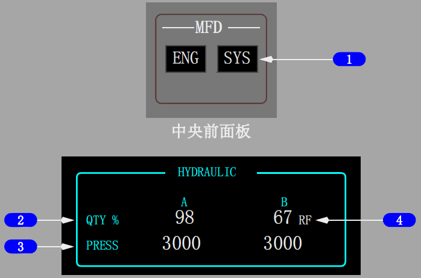
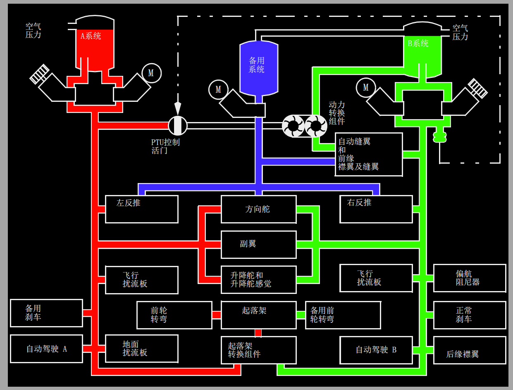

控制与指示:
返回面板

1 电动液压泵过热(OVERHEAT)指示灯
亮（琥珀色）-
用于冷却和润滑相应电动马达驱动泵的液压已过热或泵本身已过热。
2 液压泵低压(LOW PRESSURE)指示灯
亮（琥珀色）-
相关的泵输出压力低。
Note: 当一个发动机灭火手柄拔出时，低压灯不工作。
3 电动液压泵(ELECTRIC HYDRAULIC PUMPS)电门
开（ON）- 向相应电动马达驱动泵提供电源。
关（OFF）- 切断泵的电源。
4 发动机液压泵(ENGINE HYDRAULIC PUMPS)电门
开（ON）- 断开泵的断流活门电源，使泵的压力进入系统。
Note: 关车时应保持在ON位以延长电磁线圈的寿命。
关（OFF）- 接通断流活门的电源以阻止泵的输出压力。

1 多功能显示器(MFD)系统(SYS)电门
按压- SYS
• 在下部DU上显示液压指示；或如果主面板DU电门在内侧多功能显示（INBD MFD）位置，则显示在内侧DU上。
• 再次按压可清除相关DU上的指示。
2 液压(HYDRAULIC)系统油量(QUANTITY)指示(白色)
显示液压油量的数字百分比（0%～106%）。
Note: 每个油箱上也显示液压油量。
3 液压(HYDRAULIC)系统压力(PRESSURE)指示(白色)
指示系统压力：
• 正常压力 - 3000 psi
• 最大压力 - 3500 psi
Note: 当一个系统的两个泵都关闭（OFF）时，指示可能读取液压系统油箱压力，通常小于100psi。
4 加油(REFILL)指示(RF)(白色)
亮（白色）- 液压油量低于76%。
Note: 只有飞机在地面且两台发动机关车或在着陆之后襟翼收上滑行期间才能生效。
系统说明:
由A和B液压系统提供动力的组件：
| A系统 |
B系统 |
• 副翼
• 方向舵
• 升降舵和升降舵感觉
• 飞行扰流板
(每个机翼上两块)
• 地面扰流板
• 备用刹车
• 1号反推
• 自动驾驶A
• 正常前轮转弯
• 起落架
• 动力转换组件(PTU)
|
• 副翼
• 方向舵
• 升降舵和升降舵感觉
• 飞行扰流板
(每个机翼上两块)
• 前缘襟翼和缝翼
• 后缘襟翼
• 正常刹车
• 2号反推
• 自动驾驶B
• 备用前轮转弯
• 起落架转换组件
• 自动缝翼
• 偏航阻尼器。
|

A和B液压系统泵
A和B液压系统都有一个发动机驱动泵和一个AC电动马达驱动泵。
A系统发动机驱动泵由1号发动机提供动力，B系统发动机驱动泵由2号发动机提供动力。
一台发动机驱动的液压泵提供的液压油量约是相应电动马达驱动泵的6倍。
ENG 1（A系统）或ENG 2（B系统）泵ON/OFF电门控制发动机驱动泵的输出压力。
将电门置于OFF位可隔离来自该系统组件的液压油。
但只要发动机在工作，发动机驱动泵就继续运转。
拔出发动机灭火手柄可切断至发动机驱动泵的液压油，并使相应的液压泵低压（LOW PRESSURE）指示灯不工作。
ELEC 2(A系统)或ELEC 1(B系统)泵ON/OFF电门控制相应的电动马达驱动泵。
如果在任一系统中探测到过热，相应的过热（OVERHEAT）指示灯亮，此泵的动力被切断且液压泵低压（LOW PRESSURE）指示灯亮。(选型稍有不同)
Note: 一个发动机驱动的液压泵失效并且对液压系统需求高时，剩余的电动马达驱动的液压泵低压（LOW PRESSURE）指示灯可能间歇亮。
飞行操纵低压（LOW PRESSURE）指示灯、主警戒指示灯、飞行操纵（FLT CONT） 和 液压（HYD）系统信号灯也会亮。
用来冷却和润滑泵的液压油在返回到油箱之前经过一个热交换器。
A系统的热交换器位于1号主燃油箱中，B系统的位于2号主燃油箱中。
CAUTION: 电动马达驱动泵地面工作时相关主油箱中的最低燃油量为760 Kgs。
压力开关位于发动机驱动和电动马达驱动泵输出管道中。
如果泵的输出压力低，它会发出信号使相应的液压泵低压（LOW PRESSURE）指示灯亮。
位于每个输出管道中的单向活门将系统与相应的泵隔离。
相应的系统压力传感器向相应的液压系统压力指示发送发动机驱动和电动马达驱动泵综合压力。
A系统液压泄漏
如果在发动机驱动泵或其相应的管道中出现泄漏，油箱中的竖管会阻止系统液压油全部流失。
液压油面在竖管的顶端时，显示的油箱油量约为满油箱的20%。
A系统液压由电动马达驱动泵来保持。
如果电动马达驱动泵或其相应的管道出现泄漏，或发动机和电动马达驱动泵的共同部件出现泄漏，油箱中的油量会稳定下降至零，且系统的所有压力均丧失。
B系统液压泄漏
如果B系统的任何一个泵、管道或部件出现泄漏，油量下降直至指示接近零，且B系统压力丧失。
B系统油箱有一个竖管，向发动机驱动泵和电动马达驱动泵提供液压油。
当液压油面在竖管的顶端时，B系统油箱中的剩余油量足以满足动力转换组件的工作。
B系统泄漏不会影响备用液压系统的工作。
动力转换组件
PTU的作用是在B系统发动机驱动液压泵不工作的情况下，为以正常速率操纵自动缝翼、前缘襟翼和缝翼提供所需的额外液压油量。
PTU使用A系统压力向液压马达驱动泵提供动力，从而使B系统液压油增压。
当存在下列所有情况时，PTU自动工作：
• B系统发动机驱动泵液压压力降低至限制之下
• 在空中
• 襟翼小于15但未收上。/(按选型 襟翼未收上。)
起落架转换组件
起落架转换组件的作用是在A系统发动机驱动泵液压油量失去的情况下， 提供所需的液压油量按正常速率收起落架。
当存在下列所有情况时，B系统发动机驱动泵提供起落架转换组件工作所需的液压油量：
• 在空中
• 1号发动机的RPM降低至限制值以下
• 起落架手柄在收上（UP）位
• 任一主起落架未收上并锁定
液压油量指示的变化
正常操作期间，出现下列情况时液压油量指示将会改变：
• 发动机起动后，系统开始增压
• 收放起落架或前缘装置
• 长时间的巡航过程中出现冷浸。
这些变化对系统的操作几乎没有影响。
如果液压系统未正常增压，在较高高度会出现泡沫。
压力波动和相应的低 压（LOW PRESSURE）指示灯闪烁时说明有泡沫存在。
主警戒（MASTER CAUTION）和液压（HYD）信号牌灯也可能瞬间亮。